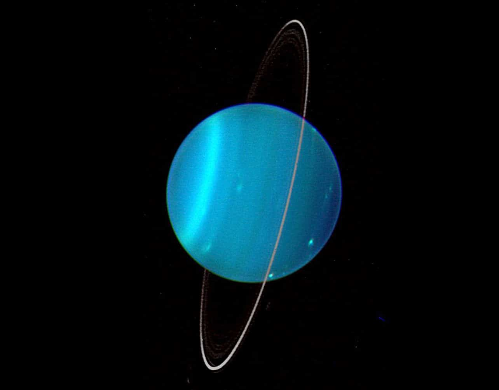

Fun Facts about Uranus
- Uranus is the seventh planet from the Sun, about 2.9 billion km away.
- It is an ice giant about 50,724 km wide, roughly 4 times wider than Earth.
- Uranus is tilted about 98°, so it spins on its side.
- One year on Uranus takes 84 Earth years.
- A day on Uranus is about 17 hours long.
- Its atmosphere is the coldest of any planet, down to -224°C (-371°F).
- Uranus has at least 28 moons and 13 rings.
- William Herschel discovered it in 1781, the first planet found with a telescope.
- Methane in its air gives it a blue-green color.

Tilt Uranus
Uranus is tilted about 98°. Move the slider to tilt it!
Tilt: 0°